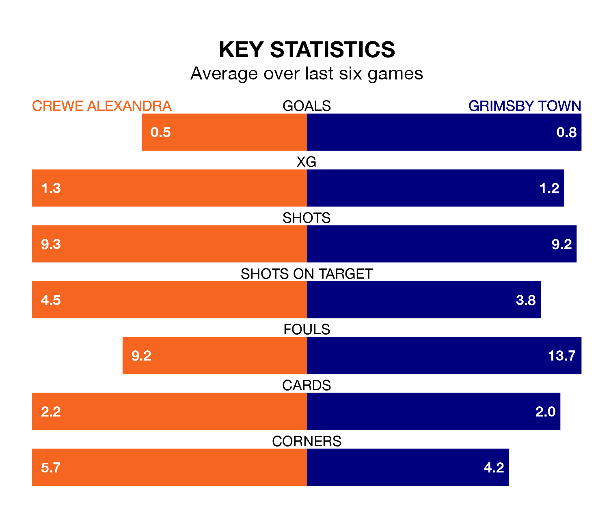

Crewe Alexandra host Grimsby Town on Saturday at the Mornflake Stadium in EFL League Two.
In their last league match, on Tuesday, Crewe beat Morecambe 1-0 away, with their goal scored by Elliot Nevitt.
Grimsby lost, 1-0 away at Harrogate Town.
With 52 goals in 42 games so far this season, Grimsby are scoring at below the league average rate with 1.2 goals per game. And they are conceding more than average, letting in 70 goals at a rate of 1.7 per game.
Crewe, meanwhile, are above average scorers, with 1.6 goals per game, compared to a league average of 1.5. They have conceded 1.3 goals per game.
In the last 10 years, Crewe and Grimsby have played each other on 11 occasions. Crewe won five of them and Grimsby six.
On average, the Railwaymen scored 1.3 goals and the Mariners 1.3 in those matches.
Their last meeting was on December 9, when Grimsby won 2-1 at home.
Town are 21st in the table after 42 games, of which they have won nine and drawn 16, earning 43 points.
The Railwaymen are 16 places ahead of the Mariners in fifth, with 19 wins and 13 draws putting them on 70 points.
The hosts are in disappointing form in EFL League Two, with one win and three draws from their last six games.
With a win and two draws over that period, the away team's form is slightly worse – they have taken five points from 18, compared to Crewe's six.
Saturday's match will be refereed by Simon Mather, who has taken charge of 12 EFL League Two games so far this season, issuing two red cards and booking 59 players. He has awarded three penalties.
The last Crewe game Mather refereed was a 1-0 home win against Notts County on November 11. His last Grimsby match was their 3-2 loss at home against Crawley Town on September 23.
Updated: 10:01 (UTC), 12/04/24